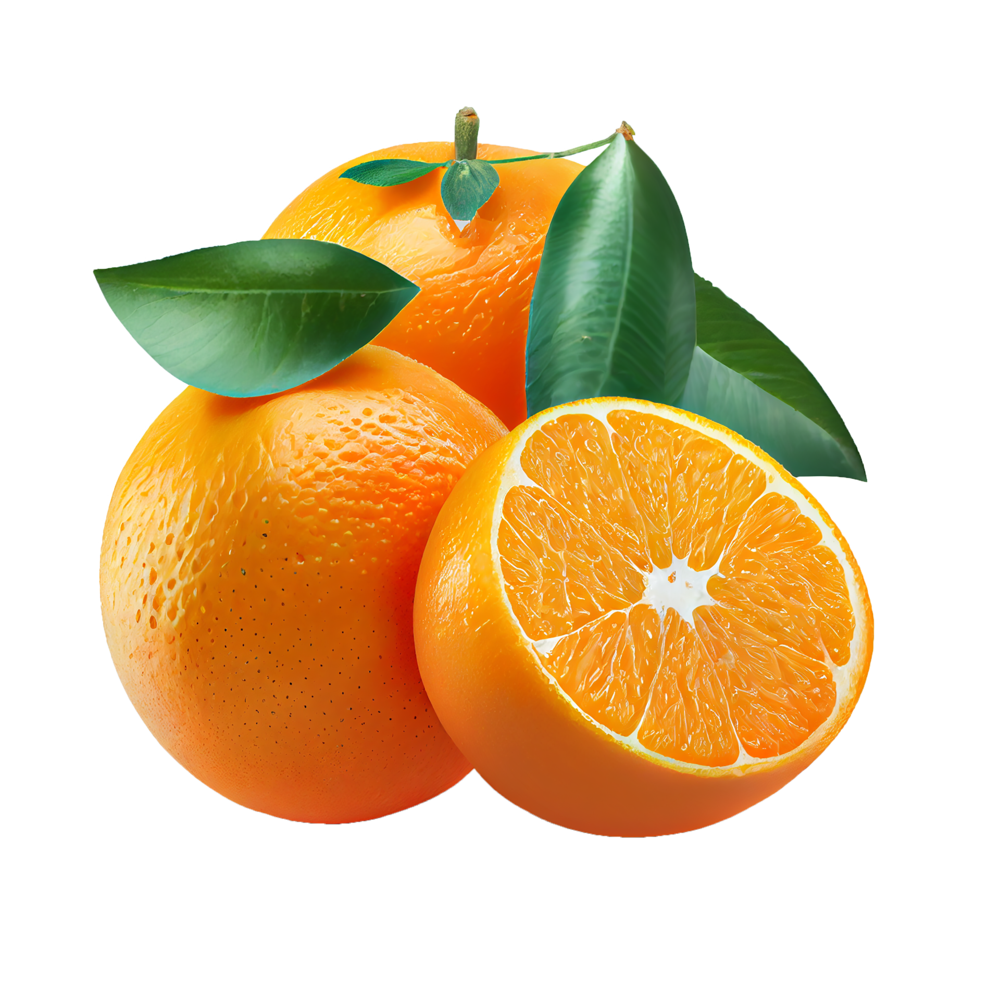
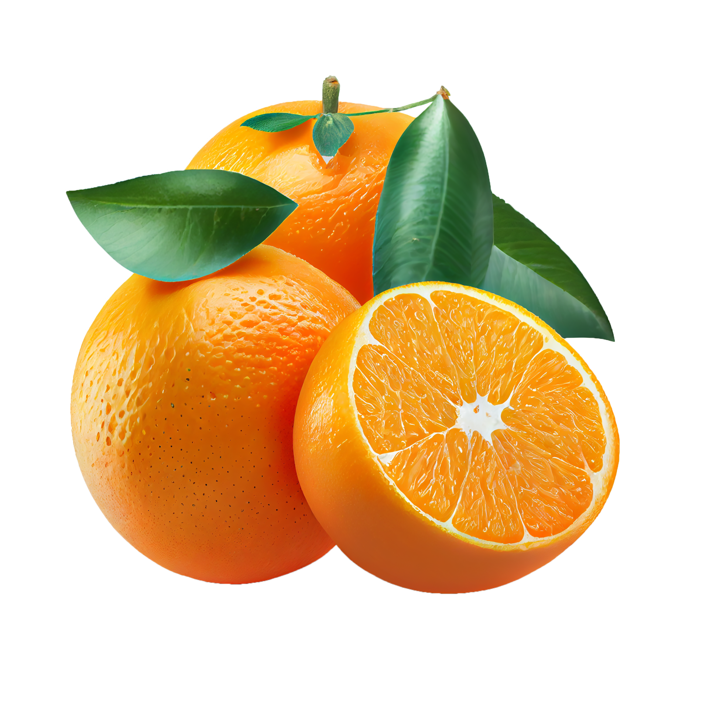

É MAIS SABOR,
É NÍVEL FANTA
Descubra o poder do sabor elevado ao nível Fanta! Deixe-se levar por uma explosão de sabores únicos e refrescantes que só a Fanta pode oferecer. Experimente uma experiência de sabor incomparável - porque mais sabor é nível Fanta.
Leia Mais 
